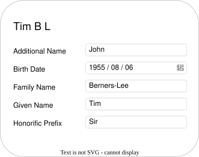
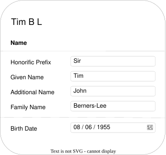
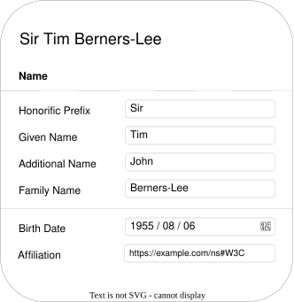
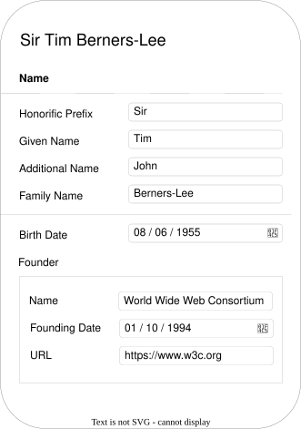

RDF applications commonly provide user interfaces that allow users to view and edit RDF resources.
SHACL Core, together with vocabularies such as DASH, has often been used for this purpose by
describing the structure, constraints, labels, and presentation-relevant metadata associated with
RDF data.
SHACL User Interfaces are defined by this specification as a complementary vocabulary and rendering model for
generating forms from SHACL shapes. It introduces UI-specific concepts and processing rules for
determining widgets, resolving labels, and grouping and ordering the form components used to manage
RDF resources.
Existing SHACL shapes and RDF data can be used to generate functional forms without additional
SHACL UI annotations. SHACL UI annotations allow authors to provide more specific rendering
information, enabling implementations to generate more tailored and consistent forms.
The goal is to improve interoperability between SHACL-based form generation systems
by defining common behavior across implementations.
This specification is intended for RDF application developers, RDF data editors, and authors of SHACL
shapes who wish to generate forms for their data.
Scope
The scope of this specification is limited to form rendering for viewing and editing RDF resources
using SHACL Core concepts such as shapes, constraints, and property paths. It defines processing
behavior for label and language resolution, field grouping and ordering, and widget determination
for value nodes.
This specification does not define the visual styling of the user interface, including the styling of individual widgets or the form as a whole.
Although it addresses some presentation-adjacent aspects, such as field grouping through sh:PropertyGroup and label handling, it defines how these are processed rather than how they are displayed.
This specification also does not define broader application-level user interface features such as search, filtering, or navigation.
It does not define a protocol for updating data stores, nor does it define form submission handling, validation behavior, or error handling.
Accessibility requirements for implementations and rendered interfaces are also out of scope, though implementations are encouraged to follow relevant accessibility guidelines.
Terminology
Link to definitions and concepts from other docs, such as SHACL Core, RDF 1.2, etc.
Terminology used throughout this specification is taken from several
sources:
Language Resolution is the process of determining and ordering the
values associated with a given subject-predicate pair, prioritizing the preferred or most relevant language
value for display.
Label Property Resolution
Label Property Resolution is the process of determining and ordering the
label property IRIs for label resolution, prioritizing the preferred or most relevant property
IRI for retrieval. It generates a default IRI when no suitable value exists.
Label Resolution
Label Resolution is the process of selecting the most appropriate
display label for an RDF resource, or generating a fallback value when no suitable value exists. It
applies to both value nodes and properties identified by sh:path, the latter of which is commonly used to label form elements.
The process includes label property resolution and language resolution, and considers labeling-related annotations from the
shapes graph, data graph, application environment, and user preferences, to determine the best label for UI presentation.
Document Conventions
Within this specification, the following namespace prefix definitions
are used:
Prefix
Namespace
rdf:
http://www.w3.org/1999/02/22-rdf-syntax-ns#
rdfs:
http://www.w3.org/2000/01/rdf-schema#
schema:
http://schema.org/
sh:
http://www.w3.org/ns/shacl#
shnex:
http://www.w3.org/ns/shacl-node-expr#
shui:
http://www.w3.org/ns/shacl-ui/
sparql:
http://www.w3.org/ns/sparql#
xsd:
http://www.w3.org/2001/XMLSchema#
ex:
http://example.com/ns#
dct:
http://purl.org/dc/terms/
Within this specification, the following JSON-LD context is used:
Note that the URI of the graph defining the SHACL vocabulary itself is
equivalent to the namespace above, i.e., it includes the
#. References to the SHACL vocabulary, e.g., via
owl:imports should include the #.
Throughout the specification, color-coded boxes containing RDF graphs
in Turtle and JSON-LD will appear. The color and title of a box
indicate whether it is a Shapes graph, a Data graph, or something
else. The Turtle specification fragments use the prefix bindings given
above. The JSON-LD specification fragments use the context given
above. Only the Turtle specifications will have parts highlighted.
# This box represents an input shapes graph
<s> <p> <o> .
// This box represents an input shapes graph
{
"@id": "ex:s",
"ex:p": {
"@id": "ex:o"
}
}
# This box represents an input data graph.
# When highlighting is used in the examples:
# Elements highlighted in blue are focus nodesex:Bob a ex:Person .
# Elements highlighted in red are focus nodes that fail validation
ex:Alice a ex:Person .
Grey boxes such as this include syntax rules that apply to the
shapes graph.
true denotes the RDF term
"true"^^xsd:boolean. false denotes the RDF
term "false"^^xsd:boolean.
TODO: define conformance criteria for SHACL UI implementations.
RDF Abstract Model Compatibility
At the time of writing, RDF 1.2 is a Working Draft. This section will be reviewed and updated when RDF 1.2 becomes a W3C Recommendation.
SHACL Renderers implementing this specification MUST support RDF 1.1 and SHOULD support RDF 1.2. When RDF 1.2 is supported, and unless
stated otherwise in this document, implementations SHOULD prefer RDF 1.2 syntax and data model features over their RDF 1.1 counterparts.
When RDF 1.2 is supported, wherever this specification refers to rdf:langString, a SHACL Renderer also accepts an
rdf:dirLangString value in its place. This acceptance is a SHACL UI convenience that applies to widget selection and form
input only; it does not establish an RDF subtype relationship between the two datatypes, whose value spaces (and lexical spaces) are
disjoint. Validation via sh:datatype remains strict: the value a widget writes back MUST conform to the datatype declared
for the property, and a property shape that admits both datatypes for validation expresses this using a list of datatypes, for example
sh:datatype ( rdf:langString rdf:dirLangString ).
Getting Started with SHACL UI
This section introduces the basics of SHACL UI through a simple example.
By the end, you will understand how a SHACL Renderer uses SHACL Core
concepts to generate user interface forms, and how SHACL UI annotations
can tailor those forms to your use case.
One goal of SHACL UI is to provide users with a simple way to generate
usable forms from a shapes graph and a data graph. This allows SHACL
shapes authors who are not necessarily software developers to inspect
how their shapes are interpreted as user interface forms, gather
feedback from collaborators, and prototype ideas without requiring
extensive software development effort.
Data Graph Only
Let's start with defining a simple data graph that we'll use
throughout this section.
With just the data graph, we have enough information for a SHACL
Renderer to generate a simple editable form.

There are a few SHACL UI concepts working together to render this
form. First, the labels in the form for the resource name and its
properties use Label Resolution to generate human-readable
labels. Second, the Scoring System
determines the most suitable editor widgets to render, selecting
shui:DatePickerEditor
for the birth date field and
shui:TextFieldEditor for
the remaining fields.
Here is how the SHACL Renderer applies the SHACL UI concepts in this
editable form:
The resource ex:TimBL is displayed as
Tim B L.
The resource's properties are inherently unordered, so the
application has chosen to display them alphabetically.
In the next example, we will use SHACL annotations to define a more
logical ordering.
Given that the value of the birth date field is an
xsd:date, the Scoring System has determined that the
shui:DatePickerEditor widget is the most appropriate.
Note that date widgets may display the ISO 8601 lexical value
1955-06-08 using localized date formatting. For
example, an application configured for Australian users may choose
to display the value as 08-06-1955.
All other values are xsd:string, so the Scoring System
has selected shui:TextFieldEditor as the most
suitable widget for them.
Adding a Shapes Graph
Now that we've seen how a SHACL Renderer can produce an editable form
from only a data graph, let's see how adding a shapes graph that
targets the resource affects the result.
With both the data graph and shapes graph provided to the SHACL
Renderer, the editable form can use shape constraints for input
validation; see the related
Displaying Validation
Results pattern. The renderer also uses
sh:group and sh:order annotations to
control the form layout, as defined in the related
Grouping, Ordering, and Layout
Hints pattern. In this example, the name-related properties
are grouped into a Name section and ordered
according to their sh:order values, while the birth
date is rendered separately because it does not belong to a group.
The same shape also introduces simple cardinality constraints.
sh:minCount 1 marks the given name and family name as
required fields, while sh:maxCount 1 tells the renderer
that those fields and the birth date should be edited as single values.
Properties without sh:minCount remain optional, and
properties without sh:maxCount 1 may be rendered with
controls for adding more than one value.

Computed Resource Labels
The data graph for a person contains enough information to derive a
more meaningful label. Instead of rendering the resource as
Tim B L using local name resolution, the shapes graph
can define a node expression that computes an rdfs:label
value from properties of the schema:Person instance.
Label Resolution then uses that computed value as the resource's
label.
Note that `schema:honorificPrefix` has no `sh:minCount`, so it is
optional. The `rdfs:label` node expression should therefore handle
missing values. For brevity, this example assumes that
`schema:honorificPrefix` is always present.
The rendered form now uses the computed rdfs:label as
the resource label, so the resource is displayed by its full name
rather than its local name.
Nested Resource Forms
RDF data commonly contains relationships between resources. So far,
we have shown how a SHACL Renderer generates a form for a single
resource. In some cases, however, editing a resource is easier when
the form also includes contextual information from related resources.
The following example demonstrates this pattern.

When rendering the form for the resource ex:TimBL, a
property shape for schema:affiliation can identify the
value as an IRI using sh:nodeKind sh:IRI. Without an
explicit details-editor preference, the Scoring System can then render
the value using a
shui:IRIEditor, allowing the
user to reference another resource without displaying its properties.
However, it can be useful to show the ex:W3C resource
nested in the same view. To do this, we can configure the same
property shape to prefer the details editor.
With the new property shape, the SHACL Renderer now nests the
ex:W3C resource in the same form as the
ex:TimBL resource.

Summary and Next Steps
This section has shown that a data graph and a SHACL Renderer are
enough to produce a usable editable form. Adding a shapes graph,
including constraints also used in ordinary SHACL validation,
allows the SHACL Renderer to use those semantics to produce more
meaningful forms.
We have only briefly touched on cardinality constraints. Other useful
but more complex topics include logical constraints and using
Dynamic SHACL
to populate the values for the enum and autocomplete editors.
You can find these in the Patterns section.
Rendering Concepts
Add conceptual model diagram on rendering concepts and how they relate
to each other as well as other concepts such as widgets.
This section explains the UI concepts and how they work together.
SHACL Renderer
A SHACL Renderer
is software that processes SHACL
shapes and data and dynamically generates a user-interface using one
or more node UI components. Implementations may add supplementary UI elements, such as a submit
button to save changes, controls to toggle between edit and view modes, selectors for focus node and
node shape, or visualizations of validation report messages.
They may also provide:
State management for editing, viewing, and tracking data changes
Widget management, including widget selection strategies
Logic for determining the initial focus node (target) and the best suited node shape
An interface to interact with the data layer
A SHACL Renderer operates on a data graph and a shapes graph, and may also take a
focus node and a node shape. When all four inputs are provided, the renderer
operates in manual mode. When the focus node or node shape is not provided,
the renderer may operate in automatic mode, in which case the application determines
appropriate values for the missing inputs.
TODO: review SHACL Renderer definition, particularly the manual and automatic mode, now that we have the scoring system defined.
A shapes graph may contain a SHACL instance of the class shui:Configuration
to define global configuration properties for rendering the UI.
sh:Graph is a SHACL subclass of shui:Configuration.
The following properties can be defined for a shui:Configuration instance.
Parameters:
Property
Summary and Syntax Rules
shui:defaultNamespace
The default namespace used to construct fresh user-added nodes.
The value of shui:defaultNamespace is a Literal whose value is a valid IRI.
shui:languagePreference
The language selection for displaying labels in widgets.
The value of shui:languagePreference is a well-formed SHACL list where all members are language tags.
The preferred language is determined according to the order of priority in the list from beginning (highest) to end (lowest).
An empty literal (`""`) represents no language, i.e., a string literal with no language tag.
shui:timeZone
The time zone used to construct new terms with datatypexsd:dateTime.
The value of shui:timeZone is of datatype xsd:string and SHOULD be an IANA time-zone identifier.
shui:labelPreference
The label properties used to determine the labels to display in widgets and labels to represent node values in the widgets.
The value of shui:labelPreference is a well-formed SHACL list where all members are SHACL Property Paths.
The preferred label property is determined according to the order of priority in the list from beginning (highest) to end (lowest).
TODO: Describe the constraint collection/aggregation behaviour here for both Node and Property UI Component.
Scoring System
Introduction
When generating user interfaces, it is often necessary to determine the most suitable user interface widget
(e.g., a text input, a date picker, a checkbox) for a given value or SHACL constraint.
To achieve this, SHACL UI defines a scoring system built on top of SHACL's validation process,
providing a flexible and extensible mechanism that implementers and applications can use to determine which widgets are applicable.
Common use cases for the scoring system include:
Selecting widgets based on the types of value nodes — for
example, preferring a Date Picker widget when the value is a literal
of type xsd:date.
Selecting widgets based on the shape's constraints — for
example, prefer a Boolean Select widget when the shape requires a
boolean value via a sh:datatype constraint.
The scoring graph is populated with instances of `shui:WidgetMatcher`. A
`shui:WidgetMatcher` associates a widget (via `shui:widget`) with the
conditions under which it applies, expressed as SHACL shapes referenced through
`shui:shapesGraphShape` (validated against the shape node in the shapes graph)
and `shui:dataGraphShape` (validated against the focus node in the data graph).
Two kinds of matcher are defined:
`shui:WidgetScore` — a matcher that additionally carries a
`shui:score`. When its shapes match, its widget is recorded with that score
by the score function.
`shui:WidgetAcceptMatcher` — a matcher used by the
accept function to decide whether a
widget is applicable at all. A widget without a `shui:WidgetAcceptMatcher` is
accepted unconditionally.
The score function is the entry point to the scoring system.
It combines both kinds of matcher: a widget is returned only if one of its `shui:WidgetScore` instances
matches and the widget is accepted according to its `shui:WidgetAcceptMatcher` instances.
A widget can also be attached to a shape directly, using `shui:editor` or `shui:viewer`. Such a widget
takes part in scoring like any other: the scoring graph is expected to contain a `shui:WidgetScore`
whose `shui:shapesGraphShape` matches shapes that declare the widget in this way.
Scoring graph preparation supplies such a
`shui:WidgetScore` for declared widgets that have none, so that a widget attached to a shape is never
silently ignored.
Score Conventions
A `shui:score` is any `xsd:integer` or `xsd:decimal`. The score
function simply orders widgets by descending score. The absolute value of a score has no meaning of its own.
The built-in widgets nevertheless follow a small set of conventional bands, described below, so that the
relative order of widgets is predictable. Third-party widget authors SHOULD reuse these bands so that their
widgets interleave with the built-in ones as intended. A widget that should win over a built-in in some situation
uses a score in the same band as, or a higher band than, that built-in.
Scores are compared globally across the whole scoring graph, not per widget. Two widgets whose
matching `shui:WidgetScore` instances carry the same score are ordered lexicographically by the Unicode code point
values of their `shui:widget` IRIs, as defined in the score function.
A band is therefore a shared frame of reference, not a guarantee of a unique position.
Band
Meaning
40
The shape explicitly declares this widget with `shui:editor` or `shui:viewer`. This is also the default
value of `shui:defaultWidgetScore` used by scoring
graph preparation for a declared widget that has no `shui:WidgetScore` of its own, so a declared widget
always competes at the top of the ladder.
30
Native match: the value's datatype or node kind is exactly what the widget is designed for and the widget
is the canonical choice for such values — for example an `xsd:string` value for a text field, an `xsd:date`
value for a date picker, or a blank node for the blank-node viewer.
20
Strong but secondary match: a good fit for the value or shape that is not the single canonical widget for
it — for example a text area for an arbitrary string, or a widget selected from the value's datatype where a
more specific widget may also apply.
10
Shape-constraint match: the shape constrains the datatype or node kind (for example with `sh:datatype` or
`sh:nodeKind`) even though the value itself may be absent or not yet of that type.
1
Last-resort fallback: the widget can technically present or edit the value but is rarely the best choice.
It is offered so that some widget is always available.
0
Applicable but discouraged: the widget is included for completeness or manual override and should never be
chosen as the default.
The built-in widgets occasionally use an intermediate score, such as `5`, to break a tie between two widgets that
would otherwise share a band. Such values are fine-tuning between the bands above and are not themselves bands.
To declare that a widget is not applicable under some condition, give the widget a
`shui:WidgetAcceptMatcher` whose shapes match the applicable case, rather than a `shui:WidgetScore` with a low or
negative score.
Scoring Graph Preparation
A widget can be attached to a shape directly, with `shui:editor` or `shui:viewer`, without the
scoring graph saying anything about that widget. Scoring graph preparation extends the
scoring graph with a `shui:WidgetScore` for each such widget, so that it participates in
the score function like any other widget.
A scoring graph MUST be prepared by this function before it is passed to the
score function. Without preparation, a widget that is only
attached to a shape with `shui:editor` or `shui:viewer` is never returned.
Inputs:
Shapes graph — The RDF graph containing the SHACL shapes.
Scoring graph — The RDF graph containing the `shui:WidgetMatcher` definitions
(`shui:WidgetScore` and `shui:WidgetAcceptMatcher`).
Output:
A prepared scoring graph — the scoring graph extended with a
`shui:WidgetScore` for each explicitly declared widget that has none.
Steps:
Initialize the prepared scoring graph as a copy of the scoring graph.
Let D be the value of the global configuration property `shui:defaultWidgetScore`.
If no such value is given, let D be 40, which is the score conventionally used by the
`shui:WidgetScore` instances of the built-in widgets that match an explicitly
declared widget.
For each property P in shui:editor and shui:viewer
Collect the set of IRI valuesW of the property P of the shapes in the
shapes graph. These are the widgets that are explicitly declared on a shape. A value of
P at a node that is not a shape does not declare a widget and is ignored. A value of
P that is not an IRI is also ignored: a widget is identified by an IRI, and a non-IRI value
such as a blank node cannot be matched reliably with `sh:hasValue` across graphs.
For each W
If the scoring graph contains an instance of `shui:WidgetScore` whose `shui:widget`
value is W, continue with the next W. The scoring graph
already defines how W is scored.
Otherwise, add an instance of `shui:WidgetScore` to the prepared scoring graph with
the following:
W as `shui:widget`.
D as `shui:score`.
As `shui:shapesGraphShape`, a `sh:NodeShape` with a single property shape whose `sh:path` is
P and whose `sh:hasValue` is W.
Return the prepared scoring graph.
The global configuration is defined by
PR #900, which is not merged yet.
Add `shui:defaultWidgetScore` to its property table once it is.
Scoring graph preparation depends only on the shapes graph and the scoring graph,
not on a focus node or a shape node. It is therefore the same for every call of the score function over those two
graphs, and implementations MAY perform it once and reuse the result. Applying it to an already prepared scoring
graph makes no further changes.
A widget that the scoring graph already scores is left untouched, even when the existing
`shui:WidgetScore` instances do not cover the declared case. A scoring graph that scores a widget is expected to
also define how that widget is scored when a shape declares it, conventionally with a `shui:WidgetScore` whose
`shui:shapesGraphShape` tests the `shui:editor` or `shui:viewer` property.
Validation Function
The validation function used by the matcher function
to validate the focus node against a list of shape nodes.
Inputs:
Focus node — The node to validate.
Target graph — The RDF graph containing the focus node.
Shape node — The SHACL shape IRI.
Shapes graph — RDF graph containing the list of SHACL shapes.
Steps:
If shape node is empty, return true.
If the focus node is not a literal and is not a subject in the target
graph, return false.
Validate the focus node according to standard SHACL validation with the following:
Focus node as focus node.
Target graph as data graph.
Shape node as shape node.
Shapes graph as shapes graph.
If the validation produces violations, return false.
If the validation conforms, return true.
If any SHACL validation fails due to malformed shapes, the validation function should log a warning and return false.
Shape validation errors should not cause the Matcher function to fail.
Matcher Function
The matcher function used by the score function and
the accept function to validate whether a widget score
applies to a given focus node and shape node.
Inputs:
Focus node — The node to validate.
Data graph — The RDF graph containing the focus node.
Shape node — The SHACL shape IRI.
Shapes graph — The RDF graph containing the list of SHACL shapes.
Scoring graph — The RDF graph containing the `shui:WidgetMatcher` definitions
(`shui:WidgetScore` and `shui:WidgetAcceptMatcher`).
Matcher node — The RDF node containing the widget matcher definition, an instance of
`shui:WidgetMatcher` (for example a `shui:WidgetScore` or a `shui:WidgetAcceptMatcher`).
Steps:
If no focus node is given, a value for the `shui:dataGraphShape` property
is present, and no value for the `shui:shapesGraphShape` is present, return `false`.
Call the validation function with the following:
Shape node as focus node.
Shapes graph as target graph.
The value of the `shui:shapesGraphShape` property of matcher node as shape node.
Scoring graph as shapes graph.
If the function returns false, return false.
If no focus node is given, return `true`.
Call the validation function with the following:
Focus node as focus node.
Data graph as target graph.
The value of the `shui:dataGraphShape` property of matcher node as shape node.
Scoring graph as shapes graph.
If the function returns false, return false.
Otherwise, return true.
Score Function
The score function determines which widgets should be used for a given combination of a focus node and a
shape node. It is the entry point to the scoring system: it returns the widgets whose
shui:WidgetScore matches and that are accepted according to their
shui:WidgetAcceptMatcher instances, ordered from best to worst match.
Inputs:
Focus node — The node to validate, may also be undefined.
Data graph — The RDF graph containing the focus node.
Shape node — The SHACL shape IRI.
Shapes graph — The RDF graph containing the list of SHACL shapes.
Scoring graph — The RDF graph containing the `shui:WidgetMatcher` definitions
(`shui:WidgetScore` and `shui:WidgetAcceptMatcher`). It MUST be a scoring graph that has been prepared
according to scoring graph preparation.
Output:
An ordered sequence of widget results, sorted by descending shui:score so that
the best match comes first. The sequence is empty if no widget matches and is accepted.
A widget result holds the shui:widget of a matching shui:WidgetScore,
the IRI of that shui:WidgetScore, and its shui:score.
Steps:
Initialize an empty ordered sequence results.
Collect instances of shui:WidgetScore in the scoring graph, sorted by shui:score
in descending order and then lexicographically by the Unicode codepoint values of shui:widget.
For each instance S of type shui:WidgetScore, in that order
Call the matcher function with the following:
Focus node as focus node.
Data graph as data graph.
Shape node as shape node.
Shapes graph as shapes graph.
S as matcher node.
Scoring graph as scoring graph.
If the matcher function returns false, continue with the next instance.
Call the accept function with the following:
Focus node as focus node.
Data graph as data graph.
Shape node as shape node.
Shapes graph as shapes graph.
The shui:widget of S as widget node.
Scoring graph as scoring graph.
If the accept function returns false, continue with the next instance.
Let R be the widget result with the following:
The shui:widget of S.
The IRI of S.
The shui:score of S.
Record the widget score by appending R to results.
Return results.
A caller that only needs the best matching widget takes the first result of the sequence.
The order of the results is fixed by the shui:score values and shui:widget IRIs alone,
which are known before any widget matcher is evaluated. The score function therefore does not need to evaluate
every widget matcher in order to produce its first result, and implementations MAY produce results
lazily — for example as an iterator or a generator — evaluating the matchers for each shui:WidgetScore
only when the caller requests the next result. Only the matchers up to and including the first accepted widget then
have to be evaluated: if the best scoring widget is rejected by its shui:WidgetAcceptMatcher, the next
best is evaluated, and so on. Because widget matchers are evaluated independently of one another, lazy and eager
evaluation produce the same sequence.
Several shui:WidgetScore instances may share the same shui:widget, in which case the accept
function is called more than once for that widget with the same inputs. The accept function is deterministic for a
given focus node and shape node, so implementations MAY evaluate it once per widget and reuse the result.
Processing
The score function MUST raise an error and terminate the algorithm in the following scenarios:
Any mandatory inputs are missing.
Widget Score instances are malformed.
Accept Function
The accept function used by the score function to check if a
widget is applicable.
Inputs:
Focus node — The node to validate.
Data graph — The RDF graph containing the focus node.
Shape node — The SHACL shape IRI.
Shapes graph — The RDF graph containing the list of SHACL shapes.
Widget node — The IRI of the widget to check acceptance for.
Scoring graph — The RDF graph containing the `shui:WidgetMatcher` definitions
(`shui:WidgetScore` and `shui:WidgetAcceptMatcher`).
Steps:
Find the shui:WidgetAcceptMatcher instance M with a matching shui:widget value.
If no such instance M exists, return true.
Call the matcher function with the following:
Focus node as focus node.
Data graph as data graph.
Shape node as shape node.
Shapes graph as shapes graph.
M as matcher node.
Scoring graph as scoring graph.
Return the return value of the matcher function.
Widget Selection
The widget with the highest score SHOULD be selected as the default widget from the Scoring Algorithm results.
Implementations MAY allow users to switch to any widget included in the results.
Since multiple score entries may reference the same widget,
a post-processing step SHOULD be performed to normalize the score results (for example,
by aggregating or de-duplicating entries by widget) before presenting the widget choices to the user.
Widget Matcher Validation
Widget matchers are malformed if they fail to validate against the
matcher validation shapes graph. That graph defines two shapes:
`shui:ScoreShape` targets `shui:WidgetScore`. A well-formed `shui:WidgetScore` has exactly one
`shui:widget` (an IRI), exactly one `shui:score` (an `xsd:decimal` or `xsd:integer`), and any
`shui:dataGraphShape` or `shui:shapesGraphShape` it declares references a valid node.
`shui:AcceptMatcherShape` targets `shui:WidgetAcceptMatcher`. A well-formed
`shui:WidgetAcceptMatcher` has exactly one `shui:widget` (an IRI), no `shui:score`, and any
`shui:dataGraphShape` or `shui:shapesGraphShape` it declares references a valid node.
Widgets
TODO: consider moving this section under "SHACL UI Concepts".
Editors
The following sub-sections enumerate the currently defined instances of shui:Editor from the SHACL UI namespace.
Property shapes can explicitly specify the preferred editor for its values using shui:editor.
If no such value has been specified, the system should pick a suitable default viewer based on the
scoring system outlined for each widget.
Viewers
The following sub-sections enumerate the currently defined instances of shui:Viewer from the SHACL UI namespace.
A property shape can have an explicitly specified preferred viewer for its values in shui:viewer.
If no such value has been specified, the system should pick a suitable default viewer based on the
scoring system outlined for each widget.
Most viewers render a single RDF value on the screen, typically as a single widget.
Form editors offer buttons to edit individual values and to add or delete values.
However, some viewers need to take more complete control over how multiple values of a property at a focus node are rendered.
The only example of such a viewer in SHACL UI is shui:ValueTableViewer, which displays
all values of a property as an HTML table.
In such cases, the notions of generic add and delete buttons do not apply.
Such viewers are called Multi Viewers and are declared instances of shui:MultiViewer instead of shui:SingleViewer.
The equivalent classes for editors are shui:MultiEditor and shui:SingleEditor.
Core Constraints
TODO: This section may not be needed if we decide to fold in the use of different constraints for common form scenarios under the Patterns section.
Property Paths
SHACL Property Paths can be used to render a SHACL shape as a
user interface.
Property paths define how data values are accessed or modified relative to a focus node.
The following subsections outline the scenarios in which SHACL UI implementations are expected to
support different kinds of property paths for viewing and editing operations.
View Mode
In view mode, property paths are used to retrieve and display data values associated with a shape.
A SHACL UI implementation must provide mechanisms to resolve these paths for visualization.
Predicate and Inverse Paths
SHACL UI implementations MUST support both
predicate paths and
inverse paths in view mode.
This ensures that values reachable via simple forward or inverse relationships can be displayed to
the user.
The following example illustrates how predicate and inverse paths are used in view mode to access
and display values, either directly from the focus node or through incoming relationships from other
nodes.
Support for complex paths is recommended, but can be left out in cases where the implementation aims
to provide symmetry between view and edit modes, and complex paths are not supported in edit mode.
The following examples illustrate a sequence path and an alternative path, both of which may be used
for richer data traversal in view mode.
Edit Mode
In edit mode, property paths determine how changes to data and the creation of new data are applied
through the user interface.
Predicate and Inverse Paths
SHACL UI implementations MUST support
predicate paths and
inverse paths in edit mode.
This allows users to modify data linked by simple properties or inverse properties.
The following example illustrates how predicate and inverse paths can be used in edit mode to modify
a person’s name and manage their membership in departments.
Alternative Paths
SHACL UI implementations SHOULD support
alternative paths in edit mode.
This enables editing where a shape can constrain multiple potential properties, and the UI can allow
users to choose which alternative to use when entering or modifying data.
When editing existing or newly created statements, the UI SHOULD provide a mechanism to update the
predicate to one of the enumerated paths in the sh:alternativePath list, but only if
those paths are either predicate paths or inverse paths. This restriction is necessary
because the object of sh:alternativePath is a SHACL list that may contain any valid
property path expression, including complex path types that are not generally feasible to edit
directly through a user interface.
Although redundant, SHACL permits nesting of sh:alternativePath expressions.
Such nesting simply flattens to a single list of predicate or inverse paths and does not alter the
effective set of alternatives available for editing.
The following example illustrates how an alternative path can be used in edit mode to allow a book's
title to be provided through either dct:title or rdfs:label.
Implementers are encouraged to support these when their use cases require advanced
data navigation or editing patterns, but such support is not mandatory as the complexity of editing
through these paths may not be feasible in all user interface contexts.
Supporting complex property paths in edit mode introduces challenges related to ambiguity and the
generation of intermediate data structures. Even when a path is used for view-only purposes,
implementations must ensure that restrictions are in place to prevent ambiguous traversal results.
SHACL property paths allow navigation across multiple steps in a graph, which can lead to
situations where a single value is reachable through multiple distinct paths.
Label and Language Resolution
UI literals — such as labels, descriptions, and other human-readable strings required for
rendering a user interface — are selected based on language tags. This section defines how
an application determines which language to use when multiple language-tagged literals are
available for a given property.
Language Resolution
When selecting a UI literal, the preferred language is determined according to the following order of
priority. Each option itself provides an ordered list of languages where earlier entries are preferred over
later ones:
The values of sh:languageIn, when present in the applicable shapes graph context. This
specification extends the semantics of sh:languageIn giving the order of language tags in the
list a meaning. Implementations MUST prefer literals according to the order of the
sh:languageIn values.
A list of languages selected in the application. How this language preference list is configured or
expressed is up to the implementation. Possible approaches include but are not limited to:
A UI feature that allows the user to select a preferred display language or languages priorities.
The list of preferred languages declared in the user's browser, as expressed through the
Accept-Language HTTP header or the navigator.languages Web API. These SHOULD be
used as the default values when no application-level language preference has been configured.
Language tags are matched according to the basic filtering scheme defined in [[RFC4647]] section 3.3.1.
In particular, a language tag such as en-US SHOULD be considered a match for a preferred
language of en.
If no literal matching the preferred language is available, implementations MAY fall back to a literal in
another available language (or without a declared language) or apply the label resolution
fallback strategy as defined for the relevant context.
Label Resolution
Label resolution determines the most appropriate human-readable string to display for an
RDF resource in a user interface. This section defines the algorithm for determining that
label, considering annotations in the shapes graph, values in the data graph,
and fallback strategies when no suitable label is found.
Label resolution is applied in two contexts:
Property labels: the label used for the field or column heading of a
property UI component, derived from the property shape or from the predicate
identified by sh:path.
Value node labels: the label used to represent a value node (e.g.,
an IRI or blank node) when it appears in a UI form or list.
Label Property Resolution
Label property resolution (i.e., determining the label properties for retrieving label values) is done according to the preferred property IRIs listed in the global configuration property shui:labelPreference.
Preferred labels default to sh:name for Property Labels and rdfs:label for Value Node Labels.
Property Labels
To determine the label for a property UI component whose property shape has
a sh:path pointing to a property pathP, implementations MUST
apply the following steps in order, stopping at the first step that yields a result:
If P is a predicate IRI and the data graph
contains one or more triples with properties determined by label property resolution and with subject P, select
the best matching value using language resolution.
If a match is found, use that literal as the label.
If P is a predicate IRI and the shapes graph
contains one or more triples with properties determined by label property resolution and with subject P, select
the best matching value using language resolution.
If a match is found, use that literal as the label.
Otherwise, an implementation-specific translation algorithm should be applied to convert the complex property path
P into a human-readable string representation.
Value Node Labels
To determine the label for a single value nodeV, implementations MUST
apply the following steps in order, stopping at the first step that yields a result:
If V is a literal, use its lexical form as the label.
If the applicable node shape for V contains a property shape
whose sh:path is annotated with
shui:propertyRole shui:LabelRole, retrieve the values of that path from
the data graph for subject V. Select the best matching value using
language resolution.
If a match is found, use that literal as the label.
If the data graph contains one or more values for the configured property path for
the value node determined by label property resolution for V,
select the best matching value using language resolution.
If a match is found, use that literal as the label.
If the shapes graph contains one or more values for the configured property path for
the value node determined by label property resolution for V,
select the best matching value using language resolution.
If a match is found, use that literal as the label.
If V is a blank node, use an implementation-specific placeholder string
(e.g., an empty string or an identifier derived from the blank node identifier) as
the label.
Local Name Resolution
To determine the label for an IRI, the local nameL of the IRI SHOULD be
used; this process is called local name resolution. Implementations SHOULD transform
the local name into a human-friendly form, for example, by splitting camel case identifiers into words.
Patterns
Add common UI form patterns here, e.g., error handling and validation, conditional rendering, etc. For each section, clearly state whether it's normative or informative and describe its use case.
TODO: Add a pattern describing how applications choose the initial node shape and focus node for rendering.
This pattern should explain that applications may nominate one or more root node shapes for entry-point forms.
Conditional Shape Selection
Add a pattern for conditional or dynamic sub-forms. Consider how the following constraints would work here. sh:class, sh:node, sh:or, sh:qualifiedValueShape.
Enumerations, Select Lists, and Autocomplete
Add a pattern for select widgets. This should cover common sources for option lists: sh:in, class-based instance selection,
SKOS concepts, node expressions, and implementation-provided query services. It should distinguish static enumerations from dynamic lookups.
Some of the UI meetings have discussed using node expressions, dynamic SHACL, and SPARQL with the SERVICE clause.
Fetching values from named graphs
Grouping, Ordering, and Layout Hints
This section is normative, except for the part explicitly marked as non-normative below.
SHACL Renderers MUST determine the presentation order of property shapes and
property groups using the value of sh:order. At each level of rendering,
property groups and ungrouped property shapes MUST be treated as members of a single
ordered sequence.
For a property shape that specifies sh:group, the position of the
property shape in the top-level sequence MUST be determined by the sh:order of
the referenced property group. The property shape's own sh:order MUST be used
only to determine its position within that property group. Within a property group,
property shapes MUST be ordered according to their own sh:order values.
The same ordering rules MUST be applied recursively to nested property groups, if supported
by the renderer.
The effective order of a property shape or
property group is the value of its sh:order. Where sh:order is not
specified, the effective order is the value of shui:defaultOrder in the
global configuration, if present. Otherwise the property shape or property group has
no effective order.
Renderers MUST order the members of an ordered sequence by the ascending numeric value of
their effective order. Members that have no effective order MUST be placed
after all members that have one.
The global configuration property shui:defaultOrder declares the
effective order assumed for property shapes and property groups that do not
specify sh:order. Its value is a literal with datatypexsd:decimal or xsd:integer, which are the datatypes that
sh:order permits.
Renderers MUST apply a deterministic tie-breaking algorithm whenever two or more members of
an ordered sequence have the same effective order, or whenever two or more members
have no effective order. Renderers SHOULD apply the following tie-breaking algorithm:
Members are ordered by their resolved label, as determined by label resolution.
Members that have the same resolved label are ordered lexicographically by the identifier
of the resource on which the sh:order is defined, that is, its IRI or blank
node identifier.
Renderers MAY use an alternative tie-breaking algorithm, provided that the algorithm yields
deterministic results within that implementation.
The remainder of this section is non-normative.
Deterministic interoperability is guaranteed only when all property groups and property
shapes participating in an ordered sequence explicitly specify sh:order, or
when the shapes graph declares shui:defaultOrder.
Presenting property shapes and property groups without sh:order last reflects
the behaviour of existing renderers, which append properties that carry no ordering hint to
the end of the form. Shape authors who prefer a numeric default can declare one explicitly
with shui:defaultOrder. Setting shui:defaultOrder 0, for example,
allows authors to assign negative sh:order values to elements that should
always be rendered before otherwise unordered elements, while positive values can be used to
position elements after them. Because the global configuration is part of the
shapes graph, this choice travels with the shapes, so interoperability across
implementations is preserved.
The following example illustrates the interpretation of a missing sh:order
value.
Role-Based Shapes
The section should explain that a single shapes graph may contain shapes used for different purposes, and implementations may need to
distinguish validation shapes and UI rendering shapes.
Default Namespace and Local Name Generation
We may need a more broader set of patterns documented for creating, updating, and deleting data via SHACL UI.
Form Messages and Error Handling
The pattern should describe how renderers may handle and display form errors, including validation errors and submission errors.
Displaying Validation Results
This sub-section should address the "Mapping validation results to the form" mentioned in ISSUE 823.
The pattern should describe how renderers may associate `sh:ValidationResult` entries with property UI components or node UI components,
using `sh:focusNode`, `sh:resultPath`, `sh:value`, `sh:sourceShape`, `sh:resultSeverity`, and `sh:resultMessage`. It should avoid defining when validation
runs or how an applications prevents malformed submissions.
Search Query
This section defines shui:searchQuery, an optional property of a property shape
that lets shape authors provide a dedicated SPARQL SELECT query for resolving candidate
value nodes from live, user-provided search input, for example within an
AutoCompleteEditor.
shui:searchQuery
A well-formed value of shui:searchQuery is a literal of datatypexsd:string, appearing directly on a property shape, and containing a SPARQL
SELECT query subject to the constraints below. A property shape has at most
one value for shui:searchQuery.
When an end user enters or changes search input for a property rendered with a widget that consumes
candidate value nodes, a SHACL Renderer that supports this extension MAY evaluate the query given by
shui:searchQuery to retrieve the candidate value nodes offered to the user.
The query MUST expect the following variables to be pre-bound by the renderer before evaluation:
Variable
Description
$searchTerm
An xsd:string literal containing the current search input entered by the end user.
$uiLanguage
A language-tagged literal identifying the user's current UI language preference, as determined by
Language Resolution.
Using the prefix handling rules, the SPARQL query derived
from the value of shui:searchQuery MUST project exactly one variable in its SELECT
clause, representing the matching IRIs or literals. The query MUST NOT include a LIMIT or
OFFSET solution modifier; result pagination and limits remain under the exclusive control of the
renderer.
A property shape with a shui:searchQuery signals that a live search widget is
appropriate for that property, even without an explicit shui:editor statement. Accordingly, the
presence of shui:searchQuery raises the AutoCompleteEditor's
score, as described in its Score rules.
This specification does not define how property roles, such as
shui:LabelRole, are resolved or auto-injected into the search query. Renderers MAY combine
value filtering and label retrieval in a single query, or retrieve them via different mechanisms.
A property shape's permissible value nodes can also be computed dynamically using a
select expression (sh:select) inside
sh:in, including a SPARQL SERVICE clause against an external endpoint, as
described in Dynamic SHACL. Such a query resolves the
full candidate set and cannot be parameterized with a user's live search input, nor can it take advantage
of vendor-specific full-text search (FTS) extensions. When a property shape combines
sh:in with shui:searchQuery, a renderer that supports shui:searchQuery
evaluates it in place of the sh:in-derived query while the user is searching. A renderer that
does not support shui:searchQuery but does support Dynamic SHACL MAY fall back to the
baseline query given by sh:in's sh:select instead.
Validation of Search Query Results
shui:searchQuery is never evaluated as part of ordinary SHACL validation: it plays no role in
determining whether a data graphconforms to a shapes graph, and a SHACL validation
engine MUST NOT evaluate it as a constraint. The rest of this subsection instead concerns implementations
that additionally choose to check the value nodes a shui:searchQuery query returns to a SHACL
Renderer against the surrounding property shape.
Shape authors SHOULD write shui:searchQuery so that its result set, for any given
$searchTerm, is a subset of the value nodes permitted by the other constraints on the
property shape (such as sh:class, sh:node, or sh:in), or
exactly that same set. A shui:searchQuery that returns value nodes outside that set risks
offering end users candidate values that do not conform to the property shape.
Because a value node returned by shui:searchQuery is offered to the end user as though it
were drawn from sh:in, implementations MAY apply SHACL validation to the outcomes of
shui:searchQuery, where the outcomes are value nodes of the property shape.
Such validation runs the property shape in isolation once for each value node returned by the
query, using that value node as the sole value for the property shape's property path, and checks
whether the result conforms to the surrounding property shape.
For a property shape such as ex:BookShape's Author property above, where
sh:in itself contains a sh:selectselect expression with a SPARQL SERVICE
clause, checking whether a value node conforms to the surrounding property shape requires
re-evaluating that sh:in constraint. This requires a SHACL validation engine that supports
federated SHACL validation — at minimum, the piece of
Dynamic SHACL that allows sh:in to contain
a sh:selectselect expression.
For such federated validation, the isolated property shape used to check a value node SHOULD
contain only the sh:in constraint, and no other constraints from the surrounding
property shape. A value node retrieved via SERVICE generally has no corresponding
triples in the local data graph, so a validation engine evaluating any other constraint (such as
sh:class or sh:node) as part of the same isolated run would evaluate it against
the local data graph and likely report a spurious violation.
Built-in Widgets
Editors
The following subsections enumerate the currently built-in instances of `shui:Editor` from the
SHACL UI namespace.
shui:AutoCompleteEditor
Score:
`40` if the property indicates its preference for `shui:AutoCompleteEditor` using a `shui:editor` statement and has a `sh:class` constraint, and the value is an IRI.
`20` if the property has `shui:searchQuery`.
`10` if the property has a `sh:nodeKind sh:IRI` and a `sh:class` constraint.
Rendering:
An auto-complete field to enter the label of instances of the class specified for the property.
For example, if the `sh:class` of the property is `ex:Country` and the user starts
typing "Nig", then "Niger" and "Nigeria" would show up as possible choices.
Implementations may want to also support the combination of `sh:class` with `sh:node`
constraints to further narrow the set of valid values.
In this case, the component would filter out any instances of the class that do not conform to the specified node shape.
In the following example, the auto-complete would only show countries that have `true` as their value
for `ex:sovereign`.
`40` if the property indicates its preference for `shui:BlankNodeEditor` using a `shui:editor` statement, and the value is a blank node.
`1` if the value is a blank node.
Rendering:
A read-only editor that displays the blank node, similar to shui:BlankNodeViewer,
yet allows the surrounding user interface to at least provide a delete button.
shui:BooleanEditor
Score:
`40` if the property indicates its preference for `shui:BooleanEditor` using a `shui:editor`
statement, and the value is an `xsd:boolean` literal.
`20` if the value is an `xsd:boolean` literal.
`10` if the property has a `sh:datatype xsd:boolean` constraint.
Rendering:
A widget for editing boolean values, typically rendered as a checkbox, toggle switch, or select dropdown
offering true and false, and, where the property is optional, optionally an additional control state
representing the absence of a value.
The exact rendering of the `BooleanEditor` may vary between implementations depending on the complexity and
requirements of the use case. In particular, implementations should carefully distinguish between optional
and required boolean properties: for optional properties, the absence of a value is semantically different
from the value `false`, and an implementation may therefore render a select dropdown with three choices
(e.g., `true`, `false`, and `none`) where `none` represents no value; for required properties, where a value
must always be present, a checkbox or toggle switch may be appropriate. Implementations may choose the most
suitable rendering approach, provided this semantic distinction is preserved.
`40` if the property indicates its preference for `shui:DateTimePickerEditor` using a `shui:editor` statement, and the value is an `xsd:dateTime` literal.
`20` for `xsd:dateTime` literals.
`10` if the property has a `sh:datatype xsd:dateTime` constraint.
Rendering:
A calendar-like date picker including a time selector.
`40` if the property indicates its preference for `shui:DetailsEditor` using a `shui:editor` statement, and the value is an IRI or a blank node.
`0` if the value is an IRI or a blank node.
Rendering:
Typically rendered as a nested form that allows editing the properties of the value node inline within the surrounding form.
The fields of the nested form are determined by the shape that applies to the value node.
This shape may be specified explicitly (e.g., via `sh:node` or other mechanisms that associate a shape with the value),
or implicitly via constraints such as `sh:class`.
Alternatively, nested fields may be defined directly on the surrounding property shape using `sh:property`.
When rendered as a nested form, the implementation recursively evaluates the applicable shape of the value node
and renders its declared property shapes as sub-fields.
Implementations may alternatively render the details in a separate dialog or dedicated view,
provided that the editing semantics remain equivalent.
This editor is particularly useful for blank nodes or tightly coupled resources
that are typically created and edited only in the context of their parent resource.
However, it may also be used for IRIs referencing other resources.
ex:Product
a owl:Class ;
a sh:NodeShape ;
rdfs:label "Product" ;
rdfs:subClassOf owl:Thing ;
sh:property ex:Product-weight .
ex:Product-weight
a sh:PropertyShape ;
sh:path ex:weight ;
shui:editor shui:DetailsEditor ;
shui:viewer shui:DetailsViewer ;
sh:description "A blank node with a numeric field and a unit which is one of the QUDT mass units." ;
sh:maxCount 1 ;
sh:name "weight" ;
sh:node ex:ValueWithWeight ;
sh:nodeKind sh:BlankNode .
ex:ValueWithWeight
a sh:NodeShape ;
rdfs:label "Value with weight" ;
sh:property ex:ValueWithWeight-numericValue ;
sh:property ex:ValueWithWeight-unit .
ex:ValueWithWeight-numericValue
a sh:PropertyShape ;
sh:path ex:numericValue ;
sh:datatype xsd:decimal ;
sh:maxCount 1 ;
sh:minCount 1 ;
sh:name "numeric value" .
ex:ValueWithWeight-unit
a sh:PropertyShape ;
sh:path ex:unit ;
sh:class <http://qudt.org/schema/qudt/Unit> ;
sh:maxCount 1 ;
sh:minCount 1 ;
sh:name "unit" ;
sh:node [
rdfs:label "Permissible values must have quantity kind Mass." ;
sh:property [
sh:path <http://qudt.org/schema/qudt/hasQuantityKind> ;
sh:hasValue <http://qudt.org/vocab/quantitykind/Mass> ;
] ;
] .
This widget requires that the surrounding property (`ex:weight`, above) declares `sh:nodeKind sh:BlankNode`
and also has a `sh:node` constraint that points at a node shape that declares the properties that shall be editable.
shui:EnumSelectEditor
Score:
`40` if the property indicates its preference for `shui:EnumSelectEditor` using a `shui:editor` statement and has a `sh:in` constraint.
`30` if the property has a `sh:in` constraint.
Rendering:
A drop-down editor for enum fields (based on the `sh:in` list, in that order).
`40` if the property indicates its preference for `shui:InstancesSelectEditor` using a `shui:editor` statement and has a `sh:class` constraint, and the value is an IRI.
`0` if the property has a `sh:class` constraint.
Rendering:
A drop-down editor for all instances of the target class (based on `sh:class` of the property).
Typically only used for classes that have few instances.
`40` if the property indicates its preference for `shui:NumberFieldEditor` using a `shui:editor`
statement, and the value is an `xsd:decimal`, `xsd:integer`, `xsd:double`, or `xsd:float` literal.
`20` if the value is an `xsd:decimal`, `xsd:integer`, `xsd:double`, or `xsd:float` literal.
`10` if the property has a `sh:datatype xsd:decimal`, `xsd:integer`, `xsd:double`, or `xsd:float`
constraint.
Rendering:
An input field to enter numeric values. The field should only allow entering valid numeric values according
to the specified datatype. If no `sh:datatype` constraint is specified, `xsd:decimal` is assumed to be the
default numeric datatype.
`40` if the property indicates its preference for `shui:RichTextEditor` using a `shui:editor` statement, and the value is an `rdf:HTML` literal.
`20` if the value is an `rdf:HTML` literal.
`10` if the property has a `sh:datatype rdf:HTML` constraint.
Rendering:
A rich text editor to enter the lexical value of a literal and a drop-down to select language.
The selected language is stored in the HTML `lang` attribute of the root node in the HTML DOM tree.
`40` if the property indicates its preference for `shui:SubClassEditor` using a `shui:editor` statement and has a `sh:rootClass` constraint, and the value is an IRI.
Rendering:
This can be an auto-complete widget to select a class, a class hierarchy widget, or a combination thereof.
The permissible values are a given class or its subclasses, defaulting to `rdfs:Resource`.
This is typically used with `sh:rootClass` to allow the user to select a subclass of the given root class.
Accept matcher: Offered only if the property does not have a `sh:singleLine true` constraint,
expressed with a `shui:WidgetAcceptMatcher`.
Score:
`40` if the property indicates its preference for `shui:TextAreaWithLangEditor` using a `shui:editor` statement.
`30` if the value is an `rdf:langString` or `rdf:dirLangString` literal and the property has a `sh:singleLine false` constraint.
`20` if the value is an `rdf:langString` or `rdf:dirLangString` literal.
`5` if the property has `rdf:langString` or `rdf:dirLangString` among the permissible datatypes.
`0` if the property has `xsd:string` among the permissible datatypes.
Rendering:
A multi-line text area to enter the value of a literal and a drop-down to select a language.
For an `rdf:dirLangString` value, it also provides a base-direction selector.
Accept matcher: Offered only if the property does not have a `sh:singleLine false` constraint,
expressed with a `shui:WidgetAcceptMatcher`.
Score:
`40` if the property indicates its preference for `shui:TextFieldEditor` using a `shui:editor` statement.
`30` if the value is an `xsd:string` literal.
`10` if the property has `xsd:string` among the permissible datatypes.
`0` if the property has a custom datatype (not from `xsd` or `rdf` namespaces but for example `geo:wktLiteral`), or if the property has a `sh:nodeKind sh:Literal` constraint.
Rendering:
An input field to enter the value of a literal, without the ability to change language or datatype.
Accept matcher: Offered only if the property does not have a `sh:singleLine false` constraint,
expressed with a `shui:WidgetAcceptMatcher`.
Score:
`40` if the property indicates its preference for `shui:TextFieldWithLangEditor` using a `shui:editor` statement.
`30` if the value is an `rdf:langString` or `rdf:dirLangString` literal.
`10` if the property has `rdf:langString` or `rdf:dirLangString` among the permissible datatypes.
`1` if the property has `xsd:string` among the permissible datatypes.
Rendering:
A single-line input field to enter the value of a literal and a drop-down to select language,
which is mandatory unless `xsd:string` is among the permissible datatypes.
For an `rdf:dirLangString` value, it also provides a base-direction selector.
The following subsections enumerate the currently built-in instances of `shui:Viewer` from the SHACL UI namespace.
shui:BlankNodeViewer
Score:
`40` if the property indicates its preference for `shui:BlankNodeViewer` using a `shui:viewer` statement, and the value is a blank node.
`1` if the value is a blank node.
Rendering:
A human-readable label of the blank node.
For example, if the blank node is an OWL restriction, then Manchester Syntax could be used.
If the blank node is a SPIN RDF expression, then a SPARQL string could be produced.
This rendering may include hyperlinks to other resources that can be reached from the blank node.
shui:DetailsViewer
Score:
`40` if the property indicates its preference for `shui:DetailsViewer` using a `shui:viewer` statement, and the value is an IRI or a blank node.
`0` if the value is an IRI or a blank node.
Rendering:
Displays the details of the value node as a nested, form-like structure within the surrounding view.
The properties shown are determined by the shape that applies to the value node.
This may be specified explicitly (e.g., via sh:node or other mechanisms that associate a shape with the value),
inferred via constraints such as sh:class,
or defined directly as nested sh:property declarations on the property shape.
When rendered as a nested display, the implementation recursively evaluates the applicable shape
and presents its property shapes as structured subsections of the parent form.
Implementations may vary in layout and visual styling,
but the logical grouping and recursive traversal of the applicable shape SHOULD be preserved.
shui:HTMLViewer
Score:
`40` if the property indicates its preference for `shui:HTMLViewer` using a `shui:viewer` statement, and the value is an `rdf:HTML` or `xsd:string` literal.
`20` if the value is an `rdf:HTML` literal.
Rendering:
The literal parsed into HTML DOM elements.
Hyperlinks in the HTML may get redirected to select resources within the same application.
Also displays the language if the HTML has a `lang` attribute on its root DOM element.
shui:HyperlinkViewer
Score:
`40` if the property indicates its preference for `shui:HyperlinkViewer` using a `shui:viewer` statement, and the value is an `xsd:anyURI` or `xsd:string` literal.
`20` if the value is an `xsd:anyURI` literal.
`0` if the value is an `xsd:string` literal.
Rendering:
A clickable hyperlink to the specified URI/URL.
shui:ImageViewer
Score:
`40` if the property indicates its preference for `shui:ImageViewer` using a `shui:viewer` statement.
`20` if the value is an IRI or a literal that has a case-insensitive recognized image file extension ending such as `.png`, `.jpg`, `.jpeg`, `.gif`, or `.svg`.
Rendering:
The image at the given URL, using `<img>` in HTML.
shui:IRIViewer
Score:
`40` if the property indicates its preference for `shui:IRIViewer` using a `shui:viewer` statement, and the value is an IRI.
`1` if the value is an IRI.
Rendering:
As a hyperlink to that IRI.
Also includes other ways of interacting with the IRI, such as opening a nested summary display.
shui:LabelViewer
Score:
`40` if the property indicates its preference for `shui:LabelViewer` using a `shui:viewer` statement, and the value is an IRI.
`10` if the value is an IRI.
Rendering:
As a hyperlink to that URI based on the display label of the resource.
The display label is typically based on the most suitable `rdfs:label` or
`skos:prefLabel` for the current user, based on their language preferences.
Also includes other ways of interacting with the URI, such as opening a nested summary display.
shui:LangStringViewer
Score:
`40` if the property indicates its preference for `shui:LangStringViewer` using a `shui:viewer` statement.
`20` if the value is an `rdf:langString` or `rdf:dirLangString` literal.
Rendering:
As the text plus a language indicator (flag or language tag).
For an `rdf:dirLangString` value, the base direction is applied to the rendered text and indicated as well.
shui:LiteralViewer
Score:
`40` if the property indicates its preference for `shui:LiteralViewer` using a `shui:viewer` statement.
`40` if the property indicates its preference for `shui:ValueTableViewer` using a `shui:viewer` statement.
Rendering:
All values of the property at the focus node are rendered into a single (HTML) table that can be scrolled
and paged independently of the rest of the form.
Each value becomes one row.
The columns of the table are derived from the node shape specified using `sh:node` for the property,
in the order specified using `sh:order`, as defined in
Grouping, Ordering, and Layout Hints.
In this example, we have used a `sh:values` rule to infer the values of the first column.
In this case, the values are simply pointing back to the focus node of each row, using `sh:this`.
Note that `sh:targetClass` is needed to get this inference correctly.
skos:Concept
sh:property ex:Concept-broader-inverse .
ex:Concept-broader-inverse
a sh:PropertyShape ;
sh:path [ sh:inversePath skos:broader ] ;
sh:group skos:HierarchicalRelationships ;
sh:name "narrower (table)" ;
shui:viewer shui:ValueTableViewer ;
sh:node ex:ConceptTableShape .
ex:ConceptTableShape
a sh:NodeShape ;
sh:targetClass skos:Concept ;
rdfs:comment "A node shape defining the columns for a shui:ValueTableViewer." ;
rdfs:label "Concept table shape" ;
sh:property ex:ConceptTableShape-self ;
sh:property ex:ConceptTableShape-type ;
sh:property ex:ConceptTableShape-altLabel .
ex:ConceptTableShape-self
a sh:PropertyShape ;
sh:path ex:self ;
sh:description "This column is used to render the (narrower) concept itself." ;
sh:name "narrower concept" ;
sh:nodeKind sh:IRI ;
sh:order "0"^^xsd:decimal ;
sh:values sh:this .
ex:ConceptTableShape-type
a sh:PropertyShape ;
sh:path rdf:type ;
sh:description "The second column shows the type of each value." ;
sh:name "type" ;
sh:nodeKind sh:IRI ;
sh:order "1"^^xsd:decimal .
ex:ConceptTableShape-altLabel
a sh:PropertyShape ;
sh:path skos:altLabel ;
sh:description "The third column shows the alternative labels." ;
sh:name "alt labels" ;
sh:datatype ( xsd:string rdf:langString ) ;
sh:order "2"^^xsd:decimal .
Property Roles
RDF resources commonly use properties to specify labels, descriptions, and other information needed for rendering, which user-interface engines depend on to render structured content.
However, the vocabularies defining these properties vary across domains and communities. To ensure consistent interpretation, property shapes can
be annotated with explicit roles for elements such as labels, descriptions, and other rendering properties.
This section introduces Property Roles for annotating SHACL property shapes, along with several built-in property roles defined in the SHUI namespace.
Property Roles are defined in the SHUI namespace and define the class shui:PropertyRole and the property shui:propertyRole.
Direct Role Annotation
Property roles can be annotated on property shapes by using the shui:propertyRole predicate and linking directly to a property role instance.
SHACL renderers may use such direct annotations to drive the way specific user-interface elements are displayed.
It is possible but not recommended to assign the same property role to multiple property shapes that apply to the same focus node using the direct role annotation form.
When this is done, the resulting behavior is undefined.
The example below illustrates the common case where a property shape is directly annotated with shui:LabelRole. This informs user-interfaces that the shape's value nodes
represent human-readable labels for resources.
Qualified Role Annotation
When multiple predicates serve the same role in the data but require a defined precedence, the qualified role annotation should be used.
For property shapes annotated with the same role, user interfaces should prefer the shape with the smallest sh:order value. If multiple shapes
share the same role, they must be sorted and processed in ascending order of their sh:order values. This use of sh:order determines
the precedence of property shapes for a role, and is unrelated to the presentation order defined in
Grouping, Ordering, and Layout Hints. In addition, any property shape
using a qualified role annotation is always preferred over a shape using a direct, unqualified role annotation.
The qualified role annotation can also be expressed using triple annotations. SHACL Renderers that support RDF 1.2
should support the triple annotation syntax in addition to the RDF 1.1-compatible qualified role annotation syntax.
Built-in Property Roles
The following sections define the instances of shui:PropertyRole in the SHUI namespace. These property roles MUST be supported
by SHACL Renderers. Additional property roles may be defined in other namespaces.
shui:LabelRole
The shui:LabelRole is used to identify properties whose values serve as human-readable display labels.
Common examples of display label predicates include rdfs:label, skos:prefLabel, and schema:name.
Definitions
shui:PropertyRole Class
The class of roles that a property shape may take with respect to its focus nodes. It is not required, but recommended, that roles
defined in other namespaces subclass shui:PropertyRole.
shui:propertyRole Property
The property used to annotate property shapes with roles. Its value is expected to be either an instance of shui:PropertyRole or a
resource that itself declares a shui:propertyRole and an associated sh:order value.
Summary of Syntax Rules from this Specification
Security Considerations
TODO
Privacy Considerations
TODO
Internationalization Considerations
TODO
Acknowledgements
Many people contributed to this document, including members of the RDF
Data Shapes Working Group.
Summary of SHACL Core Syntax to SHACL UI Index
This section enumerates the SHACL Core syntax elements and links to their corresponding SHACL UI representations.